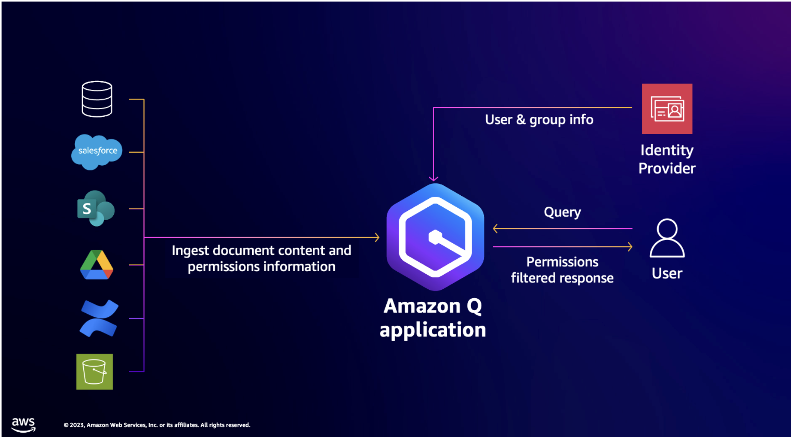

1 - Lab Overview
Amazon Q Business application is a generative AI assistant that boosts employee productivity and transforms the way that you get work done. You can quickly find accurate answers from your enterprise content, backed up with citations and references. You can brainstorm new ideas, generate content, or create summaries using Amazon Q application based on your enterprise data. Amazon Q application ensures that users access enterprise content securely according to their permissions. You can quickly deploy Amazon Q application with built-in connectors to popular enterprise repositories.
Solution Overview
In this lab, we will build a technical documentation assistant using Amazon Q Business to help developers find and answer questions about Swagger APIs, also known as the OpenAPI Specification, which provides a standardized way to describe APIs.
In this situation, the Swagger API documentation consists of JSON or YAML files, flow diagrams, and other non-rich text formats. Amazon Q Business does not handle these data types by default, therefore we will need to run an enrichment process using this notebook to generate synthetic documentation based on YAML files and images for Amazon Q for Business. Here is a flow diagram of this lab:
The lab is expected to take approximately 60 minutes to complete.
Target Audience
Users, developers, and AI enthusiasts